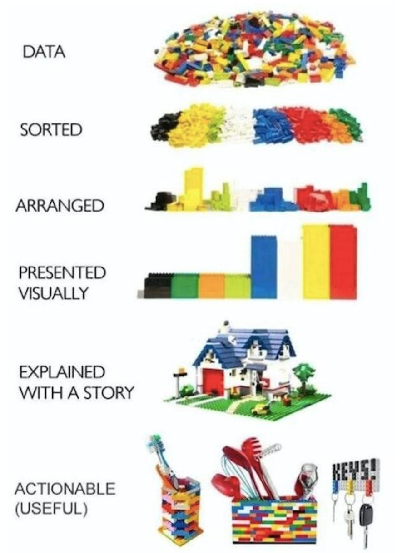

Datenanalyse Teil I#
Natalie Widmann#
Wintersemester 2024 / 2025
Datenanalyse und -verarbeitung in Python#
Ziele#
Verständnis der Analyseschritte im Datenjournalismus
Eplorative Analyse von strukturierten Daten
Grundkenntnisse bei der Visualisierung von Daten
Kennenlernen von Python Package Pandas

Was sind Daten?#
Strukturierte Daten#
Strukturierte Daten sind gut organisiert und so formattiert, dass es einfach ist sie zu durchsuchen, sie maschinell zu lesen oder zu verarbeiten. Das einfachste Beispiel ist eine Tabelle in der jede Spalte eine Kategorie oder einen Wert festlegt.
Unstrukturierte Daten#
Im Gegensatz dazu sind unstrukturierte Daten nicht in einem bestimmten Format oder einer festgelegten Struktur verfügbar. Dazu zählen Texte, Bilder, Social Media Feeds, aber auch Audio Files, etc.
Semi-Strukturierte Daten#
Semi-strukturierte Daten bilden eine Mischform. Beispielsweise eine Tabelle mit E-Mail Daten, in der Empfänger, Betreff, Datum und Absender strukturierte Informationen enthalten, der eigentliche Text jedoch unstrukturiert ist.
Was sind Daten?#

Pandas#
Pandas ist ein Python Package und ist abgeleitet aus “Python and data analysis”.
Pandas stellt die Grundfunktionalitäten für das Arbeiten mit strukturierten Daten zur Verfügung.
Installation von Python Packages#
Packages die von der Python Community zur Verfügung gestellt werden, müssen vor der Verwendung installiert werden.
Dafür können Packagemanager wie pip verwendet werden.
Weitere Tipps für die Installation von Python Packages in Windows, Linux und Mac gibt es hier.
In Jupyter Notebooks können Packages wie folgt installiert werden:
# Install a pip package im Jupyter Notebook
import sys
!pip install pandas
!pip install openpyxl
import pandas as pd
pd.set_option('display.float_format', '{:.2f}'.format)
Idee, Daten finden & Verifikation#
Aggregated figures for Natural Disasters in EM-DAT#
Link: https://data.humdata.org/dataset/emdat-country-profiles
In 1988, the Centre for Research on the Epidemiology of Disasters (CRED) launched the Emergency Events Database (EM-DAT). EM-DAT was created with the initial support of the World Health Organisation (WHO) and the Belgian Government.
The main objective of the database is to serve the purposes of humanitarian action at national and international levels. The initiative aims to rationalise decision making for disaster preparedness, as well as provide an objective base for vulnerability assessment and priority setting.
EM-DAT contains essential core data on the occurrence and effects of over 22,000 mass disasters in the world from 1900 to the present day. The database is compiled from various sources, including UN agencies, non-governmental organisations, insurance companies, research institutes and press agencies.
Was ist die Geschichte?#
Mögliche Ansätze / Fragen an die Daten#
Steigt die Anzahl an Naturkatastrophen weltweit?
In welchem Jahr gabe es die meisten Naturkatastrophen?
Welche Länder sind am stärksten von Naturkatastrophen betroffen?
Wie ist die Situation in Deutschland?
Welche Länder sind von Naturkatastrophen betroffen haben aber vergleichsweise geringe Todesfälle?
Welche Naturkatastrophen sind am tödlichsten?
Daten einlesen mit Pandas#
siehe auch:
data_url = "https://data.humdata.org/dataset/74163686-a029-4e27-8fbf-c5bfcd13f953/resource/c5ce40d6-07b1-4f36-955a-d6196436ff6b/download/emdat-country-profiles_2024_12_02.xlsx"
data = pd.read_excel(data_url, engine="openpyxl")
data
Datenexploration und -bereinigung#
Überblick über die Daten#
Wie groß ist der Datensatz?
Wie viele Zeilen und wie viele Spalten sind vorhanden?
siehe auch:#
data.shape
Die Spaltennamen
data.columns
info() für mehr Infos über die Spalten
data.info()
describe() zeigt die grundlegenden statistischen Eigenschaften von Spalten mit numerischem Datentyp, also int und float.
Die Methode berechnet:
die Anzahl an fehlenden Werten
Durchschnitt
Standardabweichung
Zahlenrange
Media
0.25 und 0.75 Quartile
data.describe()
Data Cleaning#
Erste Zeile im DataFrame entfernen
Möglichkeit: Slicing
data[1:]
data.index
data[200:220]
Möglichkeit: Drop
siehe auch: Drop
data.drop(index=0)
data = data.drop(index=0)
data
data.drop(['Year'], axis=1)
data
Entferne irrelevante Spalten
cols = ['ISO', 'Disaster Group', 'Total Damage (USD, adjusted)', 'CPI']
data.drop(cols, axis=1, inplace=True)
Einzelne Spalten auswählen und besser verstehen#
siehe auch:
Auf die Werte einer Spalte kann <dataframe>['<spaltenname>'] zugegriffen werden.
data['Year']
Mehrere Spalten können über eine Liste ausgewählt werden
data[['Year', 'Country']]
columns = ['Year', 'Country', 'Total Events', 'Total Affected']
data[columns]
Datentypen abfragen und anpassen#
siehe auch:
data.describe()
data.info()
# Datentyp Abfrage mit dem Attribut
data['Year'].dtype
# Umwandlung des Datentyp
data["Year"] = pd.to_numeric(data["Year"])
data['Year'].dtype
data.columns
# Auf alle integer und float Spalten anwenden
cols = ['Total Events', 'Total Affected', 'Total Deaths', 'Total Damage (USD, original)']
for col in cols:
data[col] = pd.to_numeric(data[col])
data.info()
data.describe()
Überblick über die numerischen Daten#
data.describe()
Überblick über die Objekt Daten#
Welche Länder kommen im Datensatz vor?
data['Country'].unique()
# Unterschiedliche Länder
countries = data['Country'].unique()
countries
len(countries)
sorted(countries)
# Vorkommen von Ländern der Liste
'Germany' in countries
# Vorkommen von Deutschland
for country in countries:
if 'german' in country.lower():
print(country)
Was sind die unterschiedlichen Katastrophentypen?#
data.columns
data['Disaster Type'].unique()
.value_counts() zeigt wie oft eine Spalte die unterschiedlichen Werte annimmt.
data['Disaster Type'].value_counts()
Mit dem Argument normalize=True wird das Vorkommen der Werte automatisch ins Verhältnis gesetzt.
data['Disaster Type'].value_counts(normalize=True)
Dataframes Sortieren#
Dataframes können anhand einer oder meherer Spalten sortiert werden.
Bei welchen Katastrophe waren am meisten Menschen betroffen?
Welche Naturkatastrophen waren am tödlichsten?
data.sort_values(by="Total Affected")
data.sort_values(by="Total Affected", ascending=False).head(10)
data.sort_values(by="Total Deaths", ascending=False).head(10)
# Mehrere Argumente zum Sortieren sind möglich
data.sort_values(by=["Disaster Subroup", "Total Affected"], ascending=[False, False]).head(n=10)
Analyse einzelner Aspekte durch Filtern von Daten#
Wie viele Naturkatastrophen gab es in Deutschland seit 2000?
Welchen Anteil haben Stürme?
Wie viele Menschen sind jedes Jahr betroffen?
Um diese Fragen zu beantworten filtern wir die Daten auf Deutschland und berechnen Statistiken.
Siehe auch:
data[data['Country'] == 'Germany']
german_data = data[data['Country'] == 'Germany']
german_data.head(5)
Aufgaben#
Wie viele Naturkatastrophen gab es in Deutschland seit 2000?
Wann und was waren die schlimmsten Naturkatastrophen in Deutschland?
Wie viele Menschen waren insgesamt in Deutschland von Naturkatastrophen betroffen?
Wie viele Menschen sind 2024 in Deutschland bei Naturkatastrophen ums Leben gekommen?
Bei welchen Katastrophen in Deutschland starben mehr als 15 Personen?
Wie oft kommen die einzelnen Naturkatastrophentypen in Deutschland vor?
Groupby#
Die groupby-Funktion in Pandas wird verwendet, um Daten in Gruppen basierend auf einem oder mehreren Spaltenwerten zu organisieren. Auf diesen Gruppen können dann weitere Funktionen wie Berechnungen oder Transformationen angewendet werden.
Der Ablauf#
Gruppieren: Daten werden nach bestimmten Spaltenwerten gruppiert.
Anwenden: Auf jede Gruppe wird eine Operation (z. B. sum, mean, count) angewendet.
Kombinieren: Die Ergebnisse werden in einem neuen DataFrame oder Series zusammengefasst.
Wie viele Menschen waren je Naturkatastrophentyp in Deutschland betroffen?
german_data.groupby(['Disaster Type'])['Total Affected'].sum()
Wie viele Menschen sind pro Jahr von Naturkatastrophen betroffen?
german_data.groupby(['Year'])['Total Affected'].sum()
Wie viele Menschen sind in Deutschland pro Jahr und Katastrophentyp betroffen?
german_data.groupby(['Year', 'Disaster Type'])['Total Deaths'].sum()